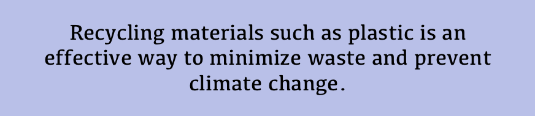
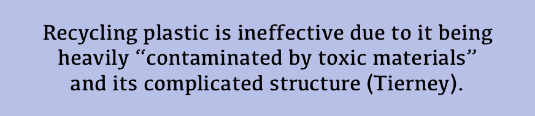
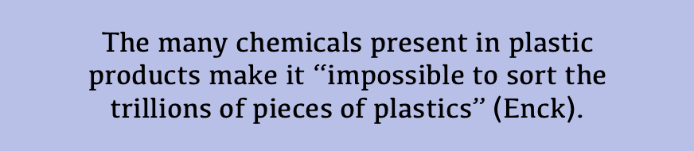

Climate
Change:
Who Is
At Fault?
Although climate change is a topic of utmost concern in the modern day, there are still many misconceptions
about its sources and true harms it causes.
Click below to view different myths and facts about the causes of climate change:
Myth
Fact
 Which companies are the biggest polluters?
Saudi Aramco, Chevron, Gazprom, ExxonMobil, and National Iranian Oil Company are the top 5 of 20 companies that have emitted 480 billion tons of CO2 since 1965 (Taylor).
What can severe climate change cause?
Severe storms, drought, rising sea levels, species extinction, and poor health caused by pollution and weather events are just a few effects of climate change on the world (UN).
How much longer until climate change is irreversible?
11 years
The United Nations assembly stated that in order to make rapid change, people "must change their patterns of consumption" (UN).
The United Nations assembly stated that in order to make rapid change, people "must change their patterns of consumption" (UN).
How much pollution is one person actually responsible for?
The average amount of CO2 released per person in the United States is around 16 tons. However, the global average is only around 4 tons per person (The Nature Conservancy).